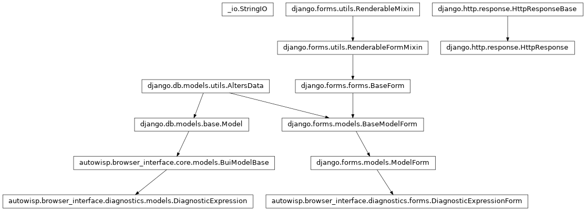

autowisp.browser_interface.diagnostics.expression_views module
Class Inheritance Diagram

Views for defining, listing and moving diagnostic expressions.
The library is global – one set of expressions shared by every project –
because an expression is a way of looking at data rather than data
itself. That is also why this page works with no project open: validity
does not depend on one (see
autowisp.diagnostics.diagnostic_types), and the only thing that
does – whether the diagnostics an expression needs are recorded here –
is reported as availability rather than as brokenness. Today’s single
status conflates “meaningless” with “nothing recorded yet”; these are not
the same complaint and do not read as one here.
- autowisp.browser_interface.diagnostics.expression_views._carry_dependents_through_rename(old_name, new_name, expressions)[source]
Rewrite everything referencing old_name to reference new_name.
A rename would otherwise orphan its dependents – the delete guard’s hazard reached from the other side – and refusing it, as deletion is refused, is not a workable answer: unlike a delete there is no gesture that makes it legal, because pointing a dependent at the new name will not validate while that name does not yet exist. So the rename carries them with it, and the caller says which ones moved.
- autowisp.browser_interface.diagnostics.expression_views._format_key = 'autowisp_diagnostic_expressions'
Marks an export file as ours and says which shape it is in. A file without the key, or carrying a version this code does not know, is refused rather than guessed at.
- autowisp.browser_interface.diagnostics.expression_views._format_version = 1
The only export shape there has been so far. It is meant to become the configuration format a command-line run is pointed at, which is why it is versioned and why a subset export pulls in what it depends on.
- autowisp.browser_interface.diagnostics.expression_views._reachable(names, expressions)[source]
Return names and every expression they reach, transitively.
Deliberately not
order_expressions(), which refuses a library with a cycle or an unresolvable name in it: exporting is one way a user moves expressions somewhere they can be repaired, so it has to work on a library that does not validate.
- autowisp.browser_interface.diagnostics.expression_views._references(name, expressions)[source]
Return the library entries one expression names directly.
Tolerates an unparseable expression by reporting no references: what is wrong with it is
check_expression()’s to say, and a page listing expressions must not fail to render because one of them is broken.
- autowisp.browser_interface.diagnostics.expression_views._render_list(request, form, edit_name='')[source]
Render the management page around form, bound or blank.
The library comes from the form rather than being fetched again: the form was built with the library this request is about, and on a failed save the table must show what is stored rather than what was typed.
- Parameters:
request – The Django request.
form (DiagnosticExpressionForm) – The form to render above the table, blank when adding and filled when editing.
edit_name (str) – The name of the row being replaced, which the template posts back so a rename stays an edit. Empty when adding.
- autowisp.browser_interface.diagnostics.expression_views._staged_expressions(entries)[source]
Return
{name: fields}for the entries of an import file.- Parameters:
entries – Whatever the file’s
expressionskey held, which is not to be trusted to be a list of anything in particular.- Returns:
{name: {"expression": …, "description": …}}, ready tobe laid over the stored library.
- Return type:
- Raises:
ValueError – If the entries are not objects carrying a name and an expression.
- autowisp.browser_interface.diagnostics.expression_views._write_expressions(entries)[source]
Store entries, returning how many were new and how many replaced.
- autowisp.browser_interface.diagnostics.expression_views.confirm_import_expressions(request)[source]
Replace the stored expressions an import was asked about.
Reached only from
import_expressions()’ question, and only by the answer that changes something – keeping the stored versions is a link back to the list, there being nothing to do.
- autowisp.browser_interface.diagnostics.expression_views.delete_expressions(request)[source]
Delete the checked expressions, unless something still needs them.
Dependents are judged against what will remain, so a whole chain may be deleted together while the bottom of it may not be deleted alone.
- autowisp.browser_interface.diagnostics.expression_views.describe_expression(name, expressions, recorded)[source]
Return one row of the management table.
The two columns that can complain say different things, and the distinction is the point of the page. Problems is whether the expression means anything, which is the same answer in every project, while missing is whether this one has recorded what it needs, which is not. An expression naming a diagnostic this project never produced is unavailable here and perfectly sound; only a typo is broken.
- autowisp.browser_interface.diagnostics.expression_views.export_expressions(request)[source]
Download the library, or a selection of it, as JSON.
A selection is extended with everything it depends on, since a file naming an expression it does not carry cannot be imported anywhere else – nor read by a command-line run, which is what this format is ultimately for.
A POST rather than a link, because the selection is the same set of checkboxes the delete button reads: one form serves both, with
formactionsending each button here or there. Nothing is lost by it – the URL of a download whose content depends on what is ticked is not worth bookmarking.
- autowisp.browser_interface.diagnostics.expression_views.import_expressions(request)[source]
Add expressions from a JSON file written by
export_expressions().The whole file is staged over the stored library before anything is checked, so that expressions referencing each other validate whatever order they appear in. Entries are then written one at a time, and one that does not validate is reported rather than aborting the rest.
A file naming an expression that already exists is the one thing this cannot decide alone, so it asks: everything uncontested is written, and the clashes go to
confirm_import_expressions()with both versions shown. Asking only when it happens is why there is no setting to get wrong beforehand – one that is read once in a hundred imports would be forgotten in the other ninety-nine.
- autowisp.browser_interface.diagnostics.expression_views.list_expressions(request, name=None)[source]
Show the library, with a form for adding to it or editing one row.
Editing is a URL rather than a click that fills the form in place, so that it needs no JavaScript, survives a refresh, and can be linked to.
Http404for a name that is not there is the right answer to a stale link, and Django’s own – the error middleware deliberately leaves it alone.- Parameters:
request – The Django request.
name (str) – The expression to open for editing, or
Noneto show the blank form.
- autowisp.browser_interface.diagnostics.expression_views.save_expression(request)[source]
Create or update one expression.
Editing is keyed by
edit_namerather than by primary key, so that the page is driven entirely by the names it displays and a rename is an edit rather than a delete followed by a create.